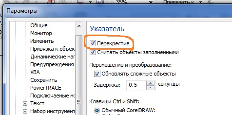

ВОПРОС / ОТВЕТ ДЛЯ НАЧИНАЮЩИХ
polzovatel-902 / 13.07.2010, 09:21/00:41
Форум:
Объясню на примере, чтоб было понятней... Открываю в кореле картинку (футболку с надписью) в формате JPG, мне нужно вытянуть из футболки надпись, т.е разъеденить файл... Говорят нужно формат изменить, еще что-то... Объясните, пожалуйста, что нужно сделать для этого...? Заранее спасибо.
конечно не так ... учите матчасть :)
а вы в каркасном режиме ( меню ВИД) на него поглядите после разъединения...
.. удалить можно в режиме Shape tools ( F10 ) - без разъединения - просто удалить точки относящиеся к данному элементу
Павел,
Павел, при разъединении, по умолчанию, самый большой объект (который служит фоном) оказывается самым верхним (смею предположить, что он у Вас чёрного цвета). Его нужно переместить на задний фон, а затем, чтоб не мешал, заблокировать (кликнув на объекте правой кнопкой и выбрав из списка команду "заблокировать объект"). Останутся буквы, с которыми уже можно извращаться. После окончания изменений не забудьте разблокировать фоновый объект (правая кнопка, команда "разблокировать")
Если открыть растровый файл корелом, то он вдруг не станет векторным. Тут нужна или трассировка (довольно грубый результат) или же отрисовка нанесения на футболку заново.
Lem,
на дату вопроса забыли глянуть? :)
это вопрос пришпиленый как первое собщение в теме
и ответы на него были даны на первых страницах
Да) сутра писал все это)
Добрый вечер! Установил себе новый CorelDraw 2014, не могу найти где инструмент стрелку поменять на перекрестье в настройках. Подскажите пожалуйста.
Punker,
оОу! Новый CorelDraw 2014? Где взяли?
Купил в Softkey.
В Х5 это выглядит вот так:

А где в 2014 найти не могу.
Punker,
CorelDraw 2014?
прямо так и написано? Можно ссылочку? Возможно речь о CorelDRAW® Home & Student Suite 2014
в Х6 ровно на том же месте ... однако
можно предположить что в этом "... и другие" и кроется ответ на ваш вопрос ...
в наборе инструментов CorelDRAW Home & Student Suite 2014 вообще можно что-либо настраивать?
Страницы